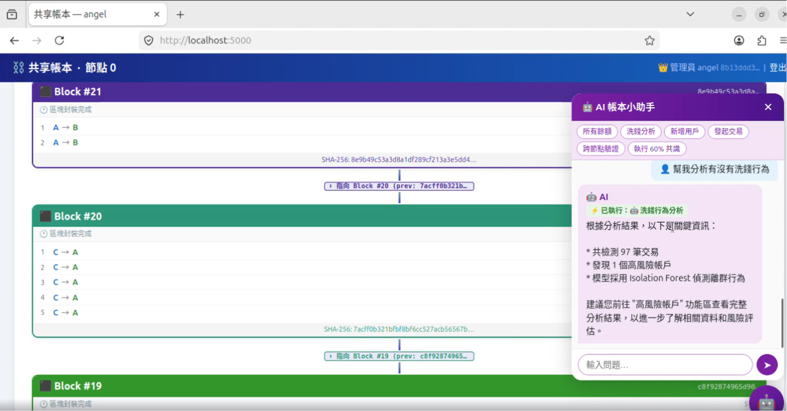

Blockchain & Security Project
2026.02 - 2026.06
分散式區塊鏈共享帳本
Decentralized Blockchain Ledger
Docker
SHA-256
Consensus Algorithm
Isolation Forest
Groq Llama3 LLM

Multi-Node Consensus & AI Monitoring
展示內容：跨節點驗證與 AI 洗錢防制即時監控
Docker 分散式節點與共識
利用 Docker 虛擬化技術建立 3 個獨立節點，模擬真實的分散式環境。實作基於 SHA-256 的區塊封裝機制（每 5 筆交易成塊），並具備 60% 門檻的跨節點驗證與共識演算法，有效阻擋人為惡意竄改。
AI 洗錢防制與對話助理
導入 Isolation Forest 無監督機器學習模型，透過 5 大特徵維度自動揪出大額或異常頻率的洗錢交易。同時串接 Groq Llama3-8B 語言模型，讓用戶能以自然語言對話查詢帳本快照。
系統實作流程
核心區塊鏈實作
開發基礎交易紀錄與餘額查詢功能，並設計將交易寫入 `.txt` 檔案的機制，計算前一區塊的 SHA-256 雜湊值以確保鏈上資料的不可竄改性。
多節點共識機制
架設 Docker 獨立節點環境，實現多終端同步操作。當偵測到資料竄改時，系統將觸發跨節點驗證，超過 60% 節點不一致即阻擋交易。
AI 異常偵測與分析
整合機器學習技術（Isolation Forest）建立反洗錢模型（AML），並開發基於 LLM 的小幫手介面，實現智慧化的帳本瀏覽與分析。